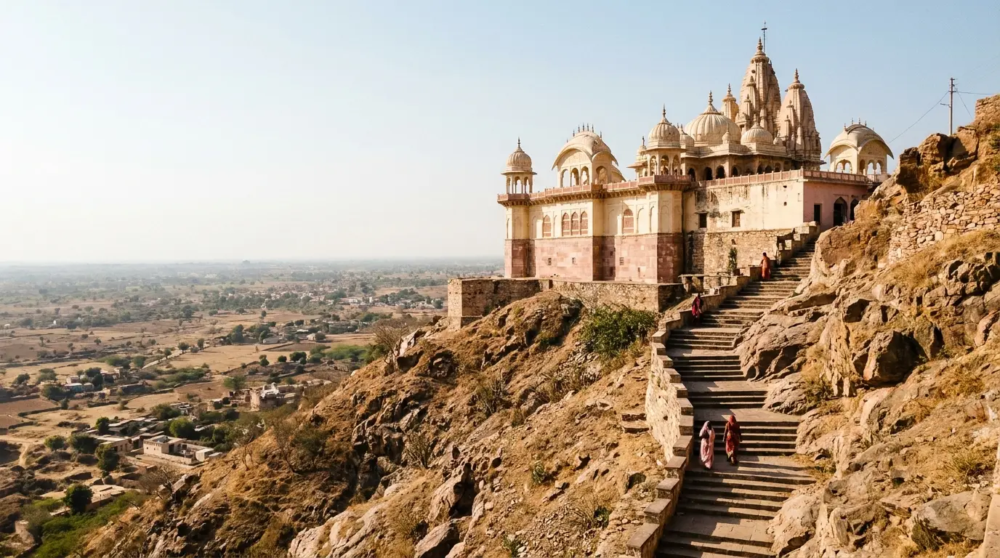

Stop 1 · 6:00–6:30 AM
Stop 1 · 6:00–6:30 AMPickup In Agra
From your hotel, home, Agra Cantt or Kheria Airport. The early start is what makes a three-town day fit — an hour lost here is an hour lost at Barsana in the evening.
~55 km, arrive Mathura 7:30–8 am~210 KM Round Trip
10–12 Hours · Driver Waits Throughout

Mathura and Vrindavan on their own are an 8–10 hour trip. Barsana sits 45 km further out, and the Radha Rani temple is at the top of a hill you climb on foot — so adding it costs about two more hours and a proper stair climb, and it is the reason this tour starts at 6 am rather than 7. In exchange you get the quietest of the three towns and a view across the whole Braj plain. If that trade does not appeal, the two-town tour is the better booking, and we will say so.
~210 KM
Agra › Mathura › Vrindavan › Barsana › Agra
10–12 HRS
Full Day, 6–6:30 AM Pickup
₹3,500
Full Day, AC Sedan
OCT–MAR
Most Comfortable Season
Times are approximate and shift with traffic and how long the darshan queues run. Tell your driver in the morning if you want to reorder, drop or add something — it does not change the fare.
Stop 1 · 6:00–6:30 AMFrom your hotel, home, Agra Cantt or Kheria Airport. The early start is what makes a three-town day fit — an hour lost here is an hour lost at Barsana in the evening.
~55 km, arrive Mathura 7:30–8 am Stop 2 · 7:30–8:00 AM
Stop 2 · 7:30–8:00 AMUsually Vishram Ghat first, then Krishna Janmabhoomi — the birth site, whose complex contains the prison cell — and Dwarkadhish, a 19th-century temple near the ghat with a black marble Krishna as Dwarkadheesh.
Allow ~2 hours Stop 3 · 10:00–10:30 AM
Stop 3 · 10:00–10:30 AMBanke Bihari first while it is less crowded, then the ISKCON Krishna-Balarama Mandir on Bhaktivedanta Swami Marg, then Prem Mandir. On this itinerary Prem Mandir falls in daylight rather than at the evening lighting.
~15 km from Mathura · allow 2.5–3 hrs Stop 4 · 1:00–1:30 PM
Stop 4 · 1:00–1:30 PMAbout 45 km and roughly an hour, out of the temple towns and into open country. This is the natural lunch stop — tell your driver and he will pull in somewhere on the way.
~45 km, ~1 hour Stop 5 · Afternoon
Stop 5 · AfternoonRadha’s birthplace village. The Laddli Ji temple sits at the top of the hill and is reached by a stair climb, with views across the Braj plains. Barsana is known for Lathmar Holi, which it and neighbouring Nandgaon play out on successive days.
Allow ~1.5 hours including the climb Stop 6 · 3:30–4:00 PM
Stop 6 · 3:30–4:00 PMAbout 90 km to Agra, an hour and a half to two hours, either by the Kosi Kalan–Hathras road or NH-19 via the Vrindavan bypass depending on the time. After a day of stairs and temple lanes, this is the restful part.
Back in Agra 7–8 pmOne fare for the whole day, for the vehicle rather than per person. Nothing is charged by the hour or the kilometre on top.
| Vehicle | Seats | Full Day Fare | Fare Includes |
|---|---|---|---|
| Sedan (Swift Dzire / Etios) | 4 | ₹3,500 | AC, driver, fuel |
| Ertiga / Marazzo | 6 | ₹4,500 | AC, driver, fuel |
| Innova Crysta | 7 | ₹5,500 | AC, driver, fuel |
Tolls and parking at individual temples are paid by the traveller, at actuals. No advance is needed for most bookings — you pay the driver on the day. See the full Agra taxi fare list for every other route and package.
You can add to this list or cut it back. The driver waits either way.
The birth site of Lord Krishna. The complex contains the prison cell (Garbha Griha) where, by tradition, he was born. It draws pilgrims year-round, and security is tight — phones and bags stay in the car.
A 19th-century Vaishnava temple near Vishram Ghat on the Yamuna, known for its Janmashtami and Holi celebrations. The main idol is a black marble form of Krishna as Dwarkadheesh.
The temple most visitors come to Vrindavan for. Darshan works differently here: the curtain (parda) is drawn and closed at intervals rather than left open, which is why the queue moves in bursts.
A white-marble temple built by Jagadguru Kripalu Maharaj and opened in 2012, with carved exterior scenes from Radha and Krishna’s life. It is at its most striking lit up in the evening — on this itinerary you see it by day.
On Bhaktivedanta Swami Marg in Vrindavan. Calmer than the old-town temples, with a programme running through the day and a well-known prasadam hall. Easy to fit either side of Banke Bihari.
Radha’s birthplace village, about 45 km from Vrindavan. The Laddli Ji temple sits on top of the hill, reached by stairs, with views across the Braj plains. The quietest stop of the day.
Clear Fare Breakdown
The whole vehicle for 10 to 12 hours, at a price agreed before you set off.
Our drivers know that vehicles park on the outer road at Banke Bihari, where the entry points at Janmabhoomi are, and how the Barsana hill access works.
You are not dropped and left to find your own way between towns. The same car and driver cover the full day.
One fixed fare for the complete tour. A long queue at Banke Bihari does not turn into a bigger bill.
For families travelling with elderly pilgrims we can plan a gentler itinerary that favours seated darshan time and avoids the busiest hours in the temple lanes.
A 5:00 am pickup for Mangala Aarti at Banke Bihari can be arranged if you ask when booking.
Ertiga and Innova options seat up to seven, and multiple cabs can be arranged for a larger group travelling together.
Travel date, number of passengers, hotel or pickup address in Agra, cab type, and any temples you want added or skipped.
Confirmation within minutes, with the all-day fare in writing and tolls and parking identified separately. Same-day bookings are accepted if a cab is free.
No advance for most bookings. Your driver’s name, number and car number come through before pickup — match the plate before you board.
Barsana is the part that makes this a long day. Drop it and the trip gets shorter and cheaper — these are the published alternatives.
The same two towns without Barsana — 8 to 10 hours instead of 10 to 12.
₹3,000 full dayMathura only — Krishna Janmabhoomi, Dwarkadhish and the ghats.
From ₹1,500 one wayVrindavan only — Banke Bihari, Prem Mandir and ISKCON.
From ₹1,800 one wayLocal Agra Operator
Padma Shree Travels operates from Shamsabad, Agra, running local sightseeing, station and airport transfers, pilgrimage trips and outstation routes. Other Braj routes are run separately — Govardhan, Gokul and Nandgaon, and the wider temple routes from Agra.
Direct WhatsApp and phone support before and during your trip.
.jpg)
The tour typically takes 10 to 12 hours including travel and temple time. Pickup is around 6:00 to 6:30 am from Agra and you are usually back around 7:00 to 8:00 pm. The total driving distance is approximately 210 km round trip.
The standard itinerary covers Krishna Janmabhoomi and Dwarkadhish Temple in Mathura; Banke Bihari Mandir, the ISKCON Krishna-Balarama Mandir and Prem Mandir in Vrindavan; and the hilltop Radha Rani (Laddli Ji) temple in Barsana. Vishram Ghat is usually taken in on the way through Mathura, and other temples can be added on request.
The full-day fare starts at ₹3,500 for a sedan, ₹4,500 for an Ertiga or Marazzo, and ₹5,500 for an Innova Crysta. The fare covers the AC car, the driver and fuel for the whole day. Tolls and temple parking are paid by the traveller.
Yes. Toll charges and parking fees at individual temples are paid by the traveller directly. There are no other charges beyond the quoted fare.
Yes. The standard itinerary covers six major temples, but you can add or skip stops based on what you want to see and how much time you have. The driver waits at each stop for as long as you need, and a longer stay at one temple does not change the fare.
October through March is the most comfortable window for temple walking and the outdoor ghats. Barsana is particularly busy during Lathmar Holi, usually in February or March. Mid-summer, May and June, is worth avoiding because of the heat.
Barsana is about 45 km beyond Vrindavan and adds roughly 2 to 2.5 hours to the day, which is the difference between the 8 to 10 hour two-town tour and this one. The Radha Rani (Laddli Ji) temple sits on a hill reached by a stair climb, with views across the Braj plains, and it is quieter than the town temples. For devotees of Radha-Krishna it is one of the significant sites in Braj. If the stair climb or the extra hours are a problem, the two-town tour is the better booking.
Not comfortably. The Mathura, Vrindavan and Barsana tour takes a full day on its own. For the Taj Mahal we suggest booking a separate early-morning visit the day before or the day after, and we can arrange back-to-back day bookings.
Govardhan Parikrama, Radha Kund and Kusum Sarovar.
Fare on WhatsAppThe other two Braj villages, including Krishna’s childhood home.
Fare on WhatsAppEvery pilgrimage route we run, in one place.
View pilgrimage routesTaj Mahal, Agra Fort and Akbar’s Tomb — a full day in the city.
From ₹2,500Akbar’s abandoned capital, a UNESCO World Heritage Site.
From ₹2,500Every route and package we run, with fares in one place.
All faresAll-day fare in writing. Pay on the day.
Send your travel date, passenger count and pickup address — we confirm within minutes, and tell you honestly if the shorter two-town day suits you better.